The spherical morphing of the surfaces accomplished by FreeSurfer can be employed to bring data from different subjects into a common anatomical frame. This chapter describes utilities which make use of the spherical morphing procedure. mne_morph_labels morphs label files between subjects allowing the definition of labels in a one brain and transforming them to anatomically analogous labels in another. mne_average_estimates offers the capability to compute averages of data computed with the MNE software across subjects.
The MNE software accomplishes morphing with help of morphing
maps which can be either computed on demand or precomputed using mne_make_morph_maps ,
see Precomputing the morphing maps. The morphing is performed with help
of the registered spherical surfaces (lh.sphere.reg and rh.sphere.reg )
which must be produced in FreeSurfer .
A morphing map is a linear mapping from cortical surface values
in subject A (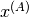) to those in another
subject B ( )
)
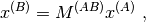
where  is a sparse matrix
with at most three nonzero elements on each row. These elements
are determined as follows. First, using the aligned spherical surfaces,
for each vertex 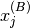, find the triangle
is a sparse matrix
with at most three nonzero elements on each row. These elements
are determined as follows. First, using the aligned spherical surfaces,
for each vertex 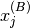, find the triangle  on the
spherical surface of subject A which contains the location .
Next, find the numbers of the vertices of this triangle and set
the corresponding elements on the j th row of so that will
be a linear interpolation between the triangle vertex values reflecting
the location within the triangle .
on the
spherical surface of subject A which contains the location .
Next, find the numbers of the vertices of this triangle and set
the corresponding elements on the j th row of so that will
be a linear interpolation between the triangle vertex values reflecting
the location within the triangle .
It follows from the above definition that in general
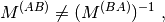
i.e.,

even if
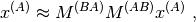
i.e., the mapping is almost a bijection.
The current estimates are normally defined only in a decimated grid which is a sparse subset of the vertices in the triangular tessellation of the cortical surface. Therefore, any sparse set of values is distributed to neighboring vertices to make the visualized results easily understandable. This procedure has been traditionally called smoothing but a more appropriate name might be smudging or blurring in accordance with similar operations in image processing programs.
In MNE software terms, smoothing of the vertex data is an
iterative procedure, which produces a blurred image  from
the original sparse image 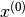 by applying
in each iteration step a sparse blurring matrix:
from
the original sparse image 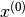 by applying
in each iteration step a sparse blurring matrix:

On each row  of the matrix
of the matrix  there
are 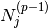 nonzero entries whose values
equal
there
are 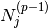 nonzero entries whose values
equal  . Here is
the number of immediate neighbors of vertex which
had non-zero values at iteration step 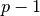.
Matrix thus assigns the average
of the non-zero neighbors as the new value for vertex .
One important feature of this procedure is that it tends to preserve
the amplitudes while blurring the surface image.
. Here is
the number of immediate neighbors of vertex which
had non-zero values at iteration step 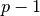.
Matrix thus assigns the average
of the non-zero neighbors as the new value for vertex .
One important feature of this procedure is that it tends to preserve
the amplitudes while blurring the surface image.
Once the indices non-zero vertices in and
the topology of the triangulation are fixed the matrices are
fixed and independent of the data. Therefore, it would be in principle
possible to construct a composite blurring matrix

However, it turns out to be computationally more effective
to do blurring with an iteration. The above formula for  also
shows that the smudging (smoothing) operation is linear.
also
shows that the smudging (smoothing) operation is linear.
The utility mne_make_morph_maps was created to assist mne_analyze and mne_make_movie in morphing. Since the morphing maps described above take a while to compute, it is beneficial to construct all necessary maps in advance before using mne_make_movie . The precomputed morphing maps are located in $SUBJECTS_DIR/morph-maps . mne_make_morph_maps creates this directory automatically if it does not exist. If this directory exists when mne_analyze or mne_make_movie is run and morphing is requested, the software first looks for already existing morphing maps there. Also, if mne_analyze or mne_make_movie have to recompute any morphing maps, they will be saved to $SUBJECTS_DIR/morph-maps if this directory exists.
The names of the files in $SUBJECTS_DIR/morph-maps are of the form:
<A> - <B> -morph.fif ,
where <A> and <B> are
names of subjects. These files contain the maps for both hemispheres,
and in both directions, i.e., both and 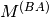, as
defined above. Thus the files <A> - <B> -morph.fif or <B> - <A> -morph.fif are
functionally equivalent. The name of the file produced by mne_analyze or mne_make_movie depends
on the role of <A> and <B> in
the analysis.
If you choose to compute the morphing maps in batch in advance, use mne_make_morph_maps , which accepts the following command-line options:
—version
Show the program version and compilation date.
—help
List the command-line options.
—redo
Recompute the morphing maps even if they already exist.
—from <*subject*>
Compute morphing maps from this subject.
—to <*subject*>
Compute morphing maps to this subject.
—all
Do all combinations. If this is used without either --from or --to options, morphing maps for all possible combinations are computed. If --from or --to is present, only maps between the specified subject and all others are computed.
Note
Because all morphing map files contain maps in both directions, the choice of --from and --to options only affect the naming of the morphing map files to be produced. mne_make_morph_maps creates directory $SUBJECTS_DIR/morph-maps if necessary.
In some instances it is desirable to use anatomically equivalent labels for all subjects in a study. This can be accomplished by creating a set of labels in one subject and morphing them to another subjects anatomy using the spherical morphing procedure. mne_morph_labels was created to facilitate this task. It has the following command-line options:
—version
Show the program version and compilation date.
—help
List the command-line options.
—from <*subject*>
Name of the subject for which the labels were originally defined.
—to <*subject*>
Name of the subject for which the morphed labels should be created.
—labeldir <*directory*>
A directory containing the labels to morph.
—prefix <*prefix*>
Adds <prefix> in the beginning of the output label names. A dash will be inserted between <prefix> and the rest of the name.
—smooth <*number*>
Apply smoothing with the indicated number of iteration steps (see About smoothing) to the labels before morphing them. This is advisable because otherwise the resulting labels may have little holes in them since the morphing map is not a bijection. By default, two smoothsteps are taken.
As the labels are morphed, a directory with the name of the subject specified with the --to option is created under the directory specified with --labeldir to hold the morphed labels.
As illustrated in Workflow of the cross-subject averaging process, cross-subject averaging involves three straightforward steps:

Workflow of the cross-subject averaging process
Note
The old utility mne_grand_average has been removed from the MNE software because of its inefficiency. All users should adopt the combination of mne_make_movie and mne_average_estimates instead.
Warning
With the --ico option it is now possible to generate source spaces with equal number of vertices in each subject. This may lead to the wrong conclusion that stc data could be averaged without doing the morphing step first. Even with identical number vertices in the source spaces it is mandatory to process the data through mne_make_movie to create corresponding source locations before using mne_average_estimates .
mne_average_estimates is the new utility for averaging data in stc files. It requires that all stc files represent data on one individual’s cortical surface and contain identical sets of vertices. mne_average_estimates uses linear interpolation to resample data in time as necessary. The command line arguments are:
—version
Show the program version and compilation date.
—help
List the command-line options.
—desc <*filenname*>
Specifies the description file for averaging. The format of this file is described below.
The description file for mne_average_estimates consists of a sequence of tokens, separated by whitespace (space, tab, or newline). If a token consists of several words it has to be enclosed in quotes. One or more tokens constitute an phrase, which has a meaning for the averaging definition. Any line starting with the pound sign (#) is a considered to be a comment line. There are two kinds of phrases in the description file: global and contextual. The global phrases have the same meaning independent on their location in the file while the contextual phrases have different effects depending on their location in the file.
There are three types of contexts in the description file: the global context, an input context, and the output context. In the beginning of the file the context is global for defining global parameters. The input context defines one of the input files (subjects) while the output context specifies the destination for the average.
The global phrases are:
tmin <*value/ms*>
The minimum time to be considered. The output stc file starts at this time point if the time ranges of the stc files include this time. Otherwise the output starts from the next later available time point.
tstep <*step/ms*>
Time step between consecutive movie frames, specified in milliseconds.
tmax <*value/ms*>
The maximum time point to be considered. A multiple of tstep will be added to the first time point selected until this value or the last time point in one of the input stc files is reached.
integ <:math:`Delta t` /*ms*>
Integration time for each frame. Defaults to zero. The integration will be performed on sensor data. If the time specified for a frame is 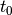, the integration range will be 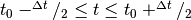.
stc <*filename*>
Specifies an input stc file. The filename can be specified with one of the -lh.stc and -rh.stc endings or without them. This phrase ends the present context and starts an input context.
deststc <*filename*>
Specifies the output stc file. The filename can be specified with one of the -lh.stc and -rh.stc endings or without them. This phrase ends the present context and starts the output context.
lh
Process the left hemisphere. By default, both hemispheres are processed.
rh
Process the left hemisphere. By default, both hemispheres are processed.
The contextual phrases are:
weight <*value*>
Specifies the weight of the current data set. This phrase is valid in the input and output contexts.
abs
Specifies that the absolute value of the data should be taken. Valid in all contexts. If specified in the global context, applies to all subsequent input and output contexts. If specified in the input or output contexts, applies only to the data associated with that context.
pow <*value*>
Specifies that the data should raised to the specified power. For negative values, the absolute value of the data will be taken and the negative sign will be transferred to the result, unless abs is specified. Valid in all contexts. Rules of application are identical to abs .
sqrt
Means pow 0.5
The effects of the options can be summarized as follows.
Suppose that the description file includes  contexts
and the temporally resampled data are organized in matrices ,
where 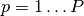 is the subject index, and
the rows are the signals at different vertices of the cortical surface.
The average computed by mne_average_estimates is
then:
contexts
and the temporally resampled data are organized in matrices ,
where 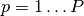 is the subject index, and
the rows are the signals at different vertices of the cortical surface.
The average computed by mne_average_estimates is
then:
![A_{jk} = |w[\newcommand\sgn{\mathop{\mathrm{sgn}}\nolimits}\sgn(B_{jk})]^{\alpha}|B_{jk}|^{\beta}](../_images/math/dd7916a6cef6b6b1b2f857cecf4574c70f12947b.png)
with
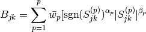
and

In the above, 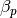 and  are
the powers and weights assigned to each of the subjects whereas
are
the powers and weights assigned to each of the subjects whereas  and
and  are
the output weight and power value, respectively. The sign is either
included (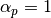,
are
the output weight and power value, respectively. The sign is either
included (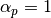,  )
or omitted (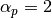, 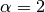)
depending on the presence of abs phrases in the description file.
)
or omitted (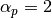, 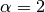)
depending on the presence of abs phrases in the description file.
Note
mne_average_estimates requires that the number of vertices in the stc files are the same and that the vertex numbers are identical. This will be the case if the files have been produced in mne_make_movie using the --morph option.
Note
It is straightforward to read and write stc files using the MNE Matlab toolbox described in The Matlab toolbox and thus write custom Matlab functions to realize more complicated custom group analysis tools.